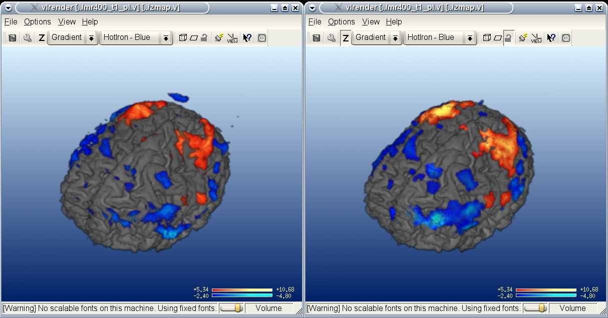

table of contents
LIPSIA Interactive 3D-Rendering
vlrender
The program 'vlrender' is not part of the standard Lipsia package.
It is distributed in a separate package. It can be downloaded from the
main lipsia page.
Note that 'vlrender' is not under the GNU
public license. For more information see license terms.
'vlrender' is a volume rendering program. The creation of 3d-renderings becomes
straightforward since the appearance of the rendered volumes can be completely controlled
within a graphical user interface (gui) in real-time. Clipping objects like planes or
boxes can be placed freely to 'open up' parts of the volume and to show whats inside.

Anatomical and zmap data can be rendered in a single step to images of arbitrary size (resolution).
Pre-rendering for standard anatomical MRI datasets is no longer required.
Interactive user-interface
To start 'vlrender' with a single anatomical data-set simply type:
vlrender -in mrxxx_t1_or.v
or in combination with a zmap:
vlrender -in norm_brain.v -zmap cgtbsGV1T.v
The 'vlrender' main window will appear showing the rendered volume inside.

If you move the mouse-cursor over the rendered volume, it will change its shape to
a little hand. By pressing and keeping pressed one of the three mouse-buttons,
the volume can be rotated (left button), translated (middle button) and zoomed
(right button) while moving the mouse.
The speed of the rendering and thus the fluency of the display and vlrender-gui
depends strongly on the performance of the processor. 'vlrender'
can be adapted in rendering speed and quality by changing the slider at the
bottom of the main window. Moving the slider to the left will decrease the
render quality and thus increase rendering speed. Moving the slider to the right
will behave vice versa.
Note: Saving an image to a file is always performed in
highest possible quality and will not be affected by this setting. See below.)
The main functions of 'vlrender' can be controlled by selecting the appropriate
item from menu or toolbar on the top of the main window or just by pressing
the associated key on the keyboard. Most of the functions are self-explanatory.
See the 'Online Help'-Entry in the Help-Menu of 'vlrender'.
Clipping objects (planes or boxes)
To resect parts of the current volume, either a clipping box or a clipping plane can be used.
To e.g. enable the clipping box, select the 'Clip-Box' entry from the 'Options'-Menu, click on
the box icon at the toolbar or simply type 'B' on the keyboard.
The clipping box and an additional dialog to control clipping properties are displayed. The clipping box
can be moved in x- and z-direction by keeping pressed the middle mouse-button
and in y-direction by keeping pressed the right mouse-button while moving the mouse.

The behaviour and use of the clipping plane is similar to that of the clipping box described above,
except that it can only be moved along the direction orthogonal to its orientation using the
middle mouse-button.
Keep in mind: Either the clipping object or the volume is active for modification. To toggle the
active object, simply press the space bar at the keyboard or select the icon showing a lock at the
toolbar. The type of the currently active object is always shown at the lower right corner of the main window.
To disable the current clipping object, click at the appropriate menu- or toolbar-item again.
Projecting a zmap
Zmap are volumes, like the anatomy data, but sometime it is desirable to have the
functional data only on the anatomy border. This is possible using the projection button
or simply press 'T'.
Be aware the projection may take some time. It also projects only the zmap-values inside
the zmap thresholds. If you change these thresholds, you have to recalculate the projection.
The greater the thresholds the longer the duration of the calculation.

After the calculation is finished the projection will rendered instead of the zmap.
By clicking on the projection button, you can change the zmap render mode. If the
thresholds of the zmap stay constant, no recalculation is needed and a cached projection
is used, so after the initial calculation the duaration of toggling the zmap mode depends on
the rendering time.
Using a colortabe for zmap rendering
If you have a zmap, which marks some regions with an index, e.g. files created with
vshowpts it is possible to colorize these regions
with a sprecific color. Therefor you need an additional file called the colormap.
A colormap file is a simple text file. The zmap value, called index and the color is written in
one row, containing for columns with integer numbers.
The first number is the index, the second the red color value, the third the green value and the fourth is the
value for the blue value of the RGB encoded color. The numbers may be seperated by one tab or space.
The colortable file format supports comments, which are lines beginning with # or %.
Comments have to be on a seperated line. Empty lines for an easier readability are supported too.
Using a colortable is easy. Just add the colortable file to the parameter list.
Example of a colortable file:
# this is a comment
% I recomment the comment starting with #
10 255 0 0
20 56 255 0
#3 0 0 255
Parameter: -ct colortablefile.txt
Be aware, if the colortable doesn't contain values of the zmap, there are rendered black.
Control the clipping object and z-values using vlview
The most convenient way to locate important regions within the volume is to control the clipping object by
connecting 'vlrender' to 'vlview'.
After selecting 'Run vlview' from the 'Options' menu or clicking the vlview icon at the toolbar, 'vlview' is
opened with the current data set.

Just by navigating through 'vlview', the 'vlrender' clipping object will follow vlview's current cursor position
as long as both programs are connected. The connection is indicated by the potted connector icon at the
toolbar of 'vlrender' and 'vlview'. (See 'Synchronize with Lipsia-Server' in the 'Options' menu or the
connector icon at the toolbar.)
In addition, changing the zmap-thresholds in 'vlview' will cause 'vlrender' to do the same if both
programs are connected.
Adjusting opacity, rotation and z-values
The adjust dialog is opened by selecting 'Adjust Rendering' from the 'Options'-Menu, selecting the adjust icon at
the toolbar or pressing 'A' at the keyboard.
To adjust opacity, rotation and z-values the appropriate radio-button in the upper half of the
adjust dialog has to be selected. The sliders at the lower half of the adjust dialog will adapt to
that choice, so that adjustment of x-, y-, z-rotation, low and high opacity as well as thresholds
for positive and negative z-values can be performed.
Saving rendered image to file
'vlrender' supports the export of the rendered image in three common
file-formats: Windows OS/2 Bitmap Graphics (*.bmp), Portable (Public) Network Graphic (*.png) and
Portable Pixelmap Graphic (*.ppm).
The rendered image can be saved to a file by selecting 'Export to image' from the 'File'-Menu, selecting
the disc icon at the toolbar or by pressing 'E' at the keyboard and choosing the filename and
folder.
Saving the image to disk might take some time, because it is rendered in the highest possible
quality. Also it is rendered without the yellow lines which usually visualize the
clipping object.
Saving and restoring 'vlrender' views
Having the current volume configured in rotation, size, position, lighting and clipping,
the configuration can be saved to a file, so that it can be restored later or applied to
other volumes with nearly the same dimensions.
The current view can be saved/loaded by selecting 'Save/Load View' from the 'File'-Menu.
Using an existing view configuration file, 'vlrender' can be started from
command-line with this given view. In combination with the
-out parameter the volume is immediateley rendered to an image file with the given view
without showing the vlrender-gui. This is the proposed way for batch-mode processing.
License terms
Note: The program 'vlrender' is based on a commercial library called VGL.
By using 'vlrender' the user agrees to the license terms and conditions
of Volume Graphics GmbH:
For more information please contact:
Volume Graphics GmbH
Wieblinger Weg 92a
D-69123 Heidelberg, Germany
Tel +49 (0)6221 7392060
Fax +49 (0)6221 7392088
info@volumegraphics.com
www.volumegraphics.com
Parameters of 'vlrender':
- -help
-
Prints usage information.
- -in
-
Input file. Default: (none)
The input file must contain anatomical data. If the input file also contains
zmap-data, it will be shown as overlay.
- -zmap
-
zmap datafile. Default: (none)
The zmap data is shown as overlay over the anatomical data specified by -in.
- -smooth
-
smoothing zmap. Default: true
flag whether the zmap should be trilinear interpolated
- -ct
-
colortable datafile. Default: (none)
The color table specifies the color for every zmap value.
- -view
-
View-configuration file (*.vlr). Default: (none)
Apply given settings for position, rotation, clipping, lighting
and z-values to current volume on startup.
- -out
-
Render image immediately to given filename. (*.png). Default: (none)
The graphical user-interface will not be loaded with this option!
The output should be controlled using the view-, width- and
height-options. Otherwise the default view is used.
- -width
-
Width [pixels] of rendered image. Default: 600
- -height
-
Height [pixels] of rendered image. Default: 600
- -v [ true | false ]
-
Verbose. Default: false
 Max Planck Institute for Human Cognitive and Brain Sciences. Further Information:
lipsia@cbs.mpg.de
Max Planck Institute for Human Cognitive and Brain Sciences. Further Information:
lipsia@cbs.mpg.de
Copyright © 2007 Max Planck Institute for Human Cognitive and Brain Sciences.
All rights reserved.